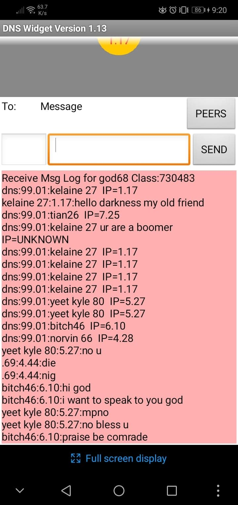
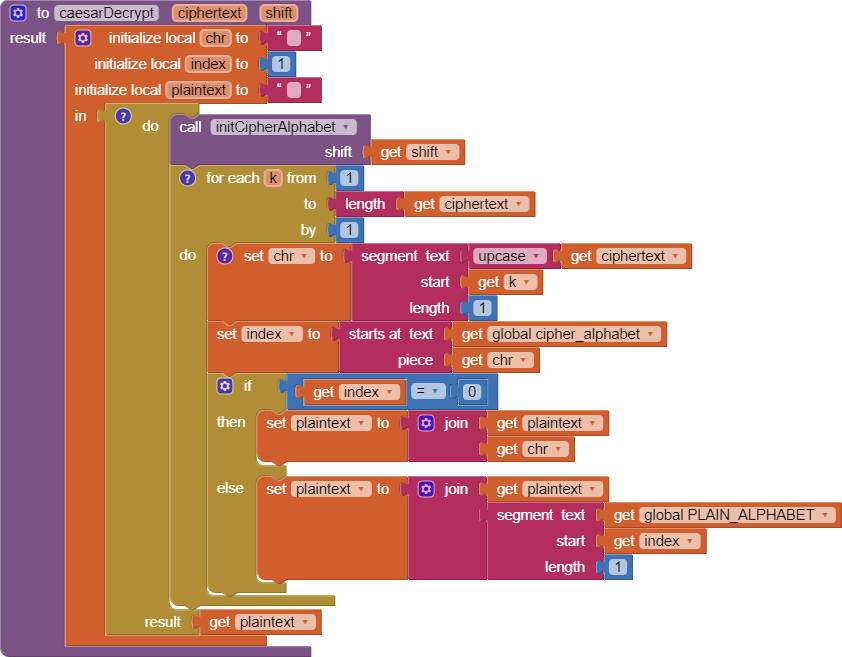

Chapter 6 Questions
Unit 6.2
1.What is bandwidth? What do you think affects the differences in bandwidth globally as well as in different locations in the U.S.?
bandwidth is the amount of data that can be sent to a location at one time. Bandwidth changes depending on the connectivity of the location such as prices of the service, area with connectivity strength, and infrastructure
2.What is latency? How does it differ from bandwidth? Why is it a useful measure?
Latency is the time it takes to connect to a server. This is a usefull measure because it tells us how stable the connection can be when you are doing something.
3.What is the digital divide? What are some ways to reduce the effects of the digital divide?
The digital divide is a seperation between those who have internet access to those who don't have any internet access. To reduce the effects of the digital divide, we have to improve the living conditons of people around the world so that they can be in an economic situation to use internet and computers.
Unit 6.3
1.(POGIL Activity 1) How does the geographical distance between the source and destination hosts on a network affect latency?
Yes it does
2.What are the benefits of packet switching?
Packet switching is beneficial as the data being sent to the server has a higher chance of making it to the location, and it is very efficient to use making the internet faster.
3.(POGIL Activity 2) Missing Packets. What should happen if a packet goes missing? Who (which layer) would handle this? What action would they have to take? And what additional information would be needed in the packet in order to handle it?
If a packet is lost, then the internet layer should be responsible and send it back to whatever send it. They would have to send the packet differently to avoid the packets to be lost such as changing the headers of the packets.
4.(POGIL Activity 2) Security/Privacy. As the packets are being transmitted through the network, can people other than the sender and receiver read the messages? What methods can we use to protect the message?
Yes other people than the sender and receiver can read the message. I think we could protect our message by using passwords so you'll have to unlock it before seeing the message.
Unit 6.4
1.What is DNS and how does it work? How does DNS help you connect to a web server like Amazon?
DNS is a domain naim system which gives websites domain names. DMS helps you connect to web servers like Amazon by matching the DNS to the ip address of the website.
2.Include a screenshot of your message log in the DNS Simulation app in Activity 1.
Unit 6.5
1.Post a screenshot of your code for the caesarDecrypt function.
2.Explain the difference between a function and a procedure. Give an example of a function.
The difference between a function and a procedure is that the prcedure runs a set o code for the program while the function returns a value after it has been called.
3.Explain the difference between global and local variables. Why are local variables easier to debug than global variables?
Global and local variables are different because local variables can only be used within the block that it is being used in while global variables can be used by all blocks. Local variables are easier to debug because they are being used by less code which makes it easy to spot.
Unit 6.6
1.Explain briefly how the following substitution ciphers can be broken: Caesar cipher, Simple substitution cipher, Vigenere cipher.
Ceaser cipher and simple substitution cipher can be broken by usng the freuquency method while the Vigenere cipher can be broken with the chart and the key used.
2.Define symmetric encryption.
Symmetric encryptions use the same format for encryption and decreption
Unit 6.7
1.Explain in your own words how public key encryption is not symmetric.
Public key encryption is not symmetral because they do not want the public to decrypt the encryption with the key which can leasd to security breaks.
2.Cryptography relies on open standards - a protocol or standard that is publicly available. Why are open standards necessary?
Open standards are necessary because they can be used by everyone who needs it when they need it.
Unit 6.8
1.For each of the 5 bugs in the Caesar Cipher app, explain what the bug was, how to fix it, and the type of error (semantic or syntax). If you wish, you can take a picture of your corrected blocks and then annotate it to identify and describe the bugs you fixed.
The first 2 bugs were the for loop for the encrypt and decrypt algorithms. For encrypt the code had a integer instead of the length of the plain text string, for decrypt, the for loop had a 3 instead of the cipher text length. These errors are semantic errors. The 3rd and 4th error were the encrypt and decrypt having the wrong results in them. The encrypt algorithm needed to return the cipher text instead of plain text while the decrypt needed to return plaintext instead of cipher text. These errors are semantic. Lastly, the 5th error is the button encrypt algorithm not setting the cipher text and instead plain text. This error is semantic.
Unit 6.9
1.What does it mean to say that the government would like to have a back door to the encrypted data on a mobile phone?
The government would like a back door to the encrypted data on a mobile phone so they can access the data witout having to break the phone password.
2.What are the main legal and ethical reasons for letting the government have a back door?
Letting the government have a backdor would make privacy for the citizens unsafe which would lead to a lot private information being sent to the government.
3.What are the main legal and ethical reasons against letting the government have a back door?
Reasons agains letting government have a backdoor is that it liits the ability for th government to protect the people when needed such as to prevent a terrorist attack.
4.Do you think Apple should abide by the Court’s decision and unlock the mobile phone in the San Bernardino case? Explain.
I don't think that apple should